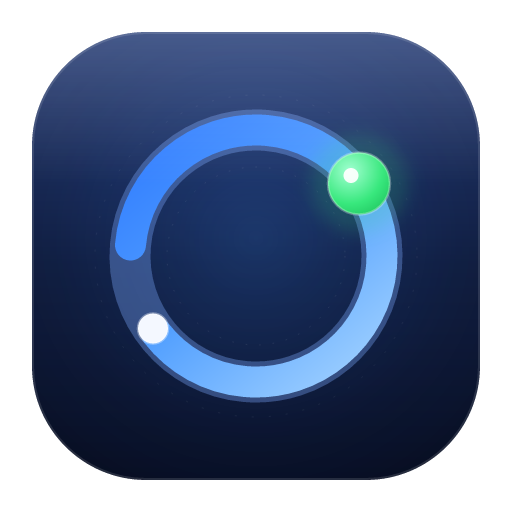
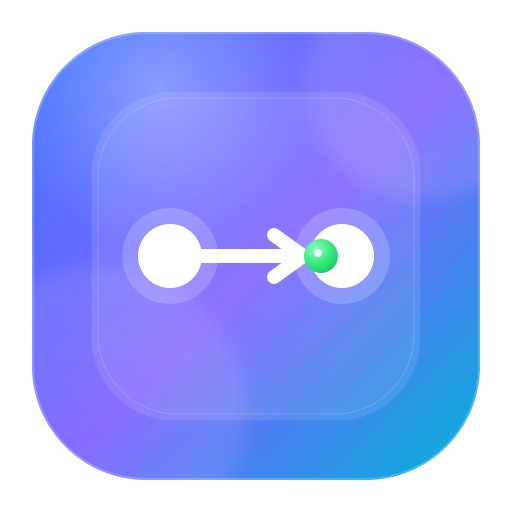
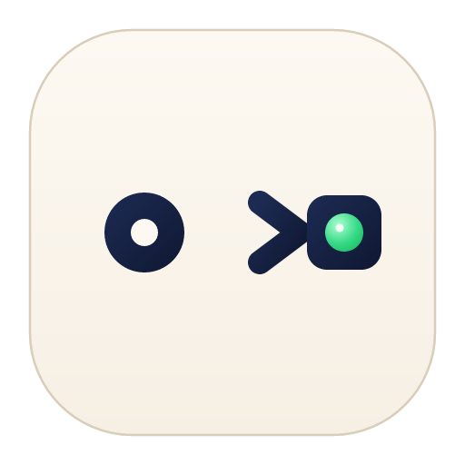
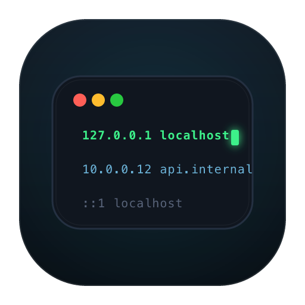
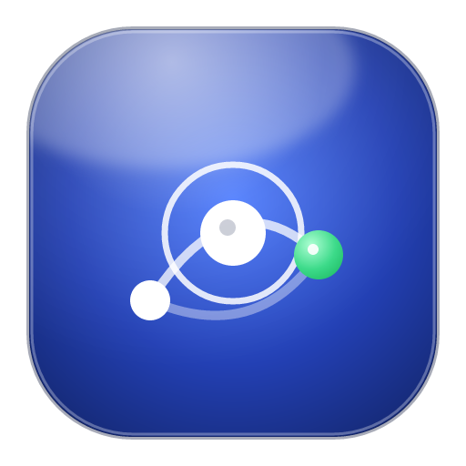
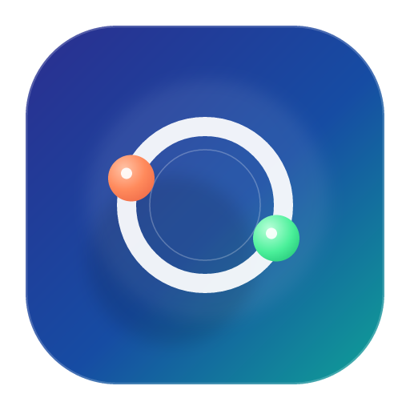

6 套风格候选 · 1024px 矢量源 · 点击浏览器可直接对比

延续现有抽象锚点：深海军蓝 + 蓝光环 + 绿色节点，稳重耐看。

蓝紫青渐变与毛玻璃面板，白节点 + 箭头表达主机名到 IP 的映射。

奶油底色 + 墨蓝图形，圆点经箭头到达方块，小尺寸依然清晰。

近黑底 + 等宽 hosts 行与绿色光标，开发工具气质强烈。

经典 macOS 光泽蓝与白色网络节点，贴近系统应用质感。

靛蓝到青绿渐变 + 白色轨道，珊瑚与薄荷节点，更年轻有冲击力。